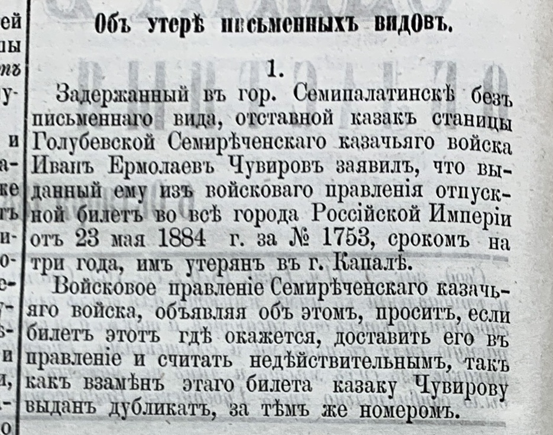
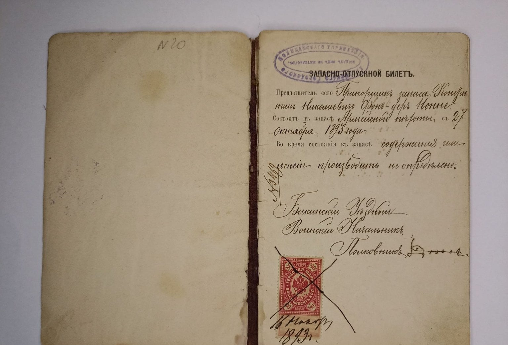
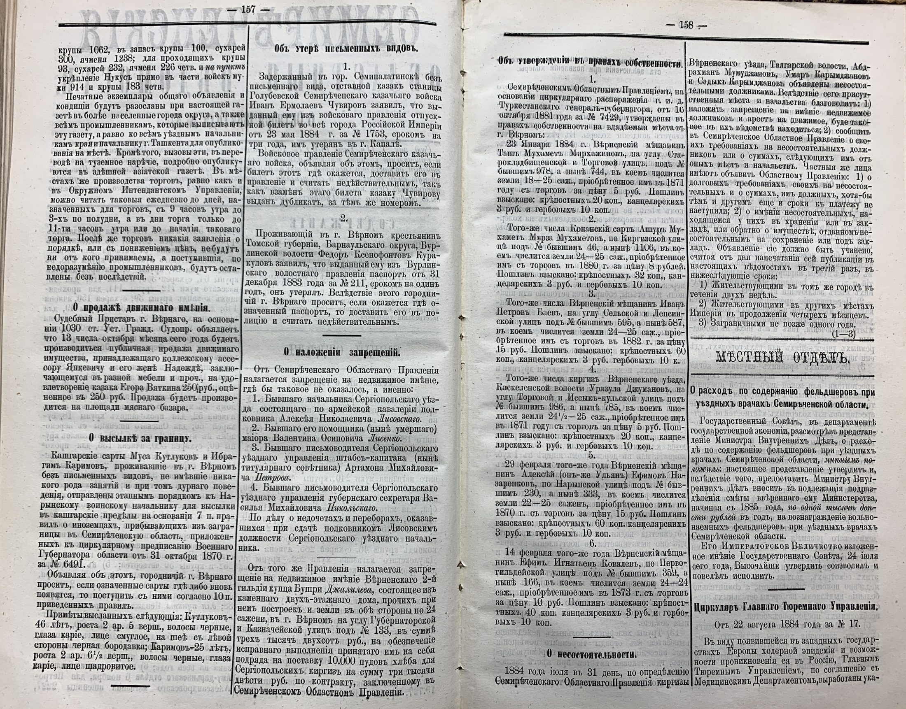

Zeitungsecke · 1884
Отставной казак станицы Голубевской Иван Ермолаев Чувиров задержан в Семипалатинске без письменного вида: билет, выданный ему на три года во все города Российской империи, потерян в Капале. Единственное известное упоминание Ивана Чувирова.

СОВ, 1884, № 56, с. 157. Рубрика «Объ утерѣ письменныхъ видовъ», запись № 1.
«Объ утерѣ письменныхъ видовъ.
1.
Задержанный въ гор. Семипалатинскѣ безъ письменнаго вида, отставной казакъ станицы Голубевской Семирѣченскаго казачьяго войска Иванъ Ермолаевъ Чувировъ заявилъ, что выданный ему изъ войсковаго правленія отпускной билетъ во всѣ города Россійской Имперіи отъ 23 мая 1884 г. за № 1753, срокомъ на три года, имъ утерянъ въ г. Капалѣ.
Войсковое правленіе Семирѣченскаго казачьяго войска, объявляя объ этомъ, проситъ, если билетъ этотъ гдѣ окажется, доставить его въ правленіе и считать недѣйствительнымъ, такъ какъ взамѣнъ этаго билета казаку Чувирову выданъ дубликатъ, за тѣмъ же номеромъ.»
Что такое отпускной билет. Это личный документ, по которому отставной казак имел право отлучаться с места приписки. Билет Ивана Чувирова выдан во все города Российской империи сроком на три года, то есть был не разовым пропуском в соседний уезд, а разрешением ездить по стране. Без него человек оказывался «безъ письменнаго вида», и это само по себе было основанием для задержания: именно так Чувиров и попал в полицию Семипалатинска. Заметка показывает и обратную сторону, войсковое правление не наказало казака, а выдало дубликат за тем же номером, объявив прежний билет недействительным через официальную часть губернской газеты.

Как выглядел такой билет. Разворот запасно-отпускного билета 1893 года, из частного собрания. Это не билет Чувирова и не казачий документ: бланк армейский, выдан Бакинским уездным воинским начальником прапорщику запаса. Показан ради вида и устройства бумаги, которую казак возил с собой.
«ЗАПАСНО-ОТПУСКНОЙ БИЛЕТЪ.
Предъявитель сего прапорщикъ запаса Константинъ Николаевичъ Фонъ-деръ Ионне. Состоитъ въ запасѣ армейской пѣхоты съ 27 октября 1893 года. Во время состоянія въ запасѣ содержанія или пенсіи производить не опредѣлено.
Бакинскій Уѣздный Воинскій Начальникъ, Полковникъ [подпись неразборчива].
[Гербовая марка 80 копѣекъ, погашена крестом и датой:] 16 ноября 1893 г.
[В левом верхнем углу оттиск круглой печати уездного воинского управления; на левой странице карандашом: № 20; на корешке номер дела.]»
Что видно из этого образца. Билет, это не листок, а сшитая книжечка с гербовой маркой, оттиском печати воинского управления и живой подписью начальника. Именно поэтому потеря такой бумаги была событием, о котором объявляли через губернскую газету, а взамен выдавали дубликат за прежним номером: подделать её было трудно, а без неё человек не мог доказать, кто он. У казаков документ назывался просто отпускным билетом и выдавался войсковым правлением, у запасных нижних чинов и офицеров армии, как здесь, запасно-отпускным и выдавался уездным воинским начальником. Устройство бумаги при этом одно и то же.
География заметки объясняет, как далеко забирались отставные казаки станицы. Билет утерян в Капале, уездном городе Семиреченской области, а задержан Чувиров в Семипалатинске, это уже другая область, около семисот вёрст от дома по тогдашним трактам.
Кто такой Иван Ермолаев Чувиров. В метрических книгах Борохудзирского прихода за 1871-1901 годы его нет ни разу: ни своей семьи, ни детей, ни смерти. Зато там есть его однофамильцы с тем же отчеством. В 1892 году восприемником у Мальцевых записан «отставной казакъ выселка Подгорнаго Симеонъ Ермолаевъ Чувировъ», а в 1894 году вторым браком выходит замуж «вдовая казачка выселка Подгорнаго Варвара Афанасьева Чувырова», 48 лет. Иван и Симеон, оба Ермолаевичи и оба отставные казаки, почти наверняка родные братья; Варвара, по возрасту и месту, вдова кого-то из этого же двора. Родство пока не доказано документом, это вывод по отчеству, сословию и месту.
Написание фамилии в источниках плавает: в газете 1884 года Чувировъ, в метрике 1892 года тоже Чувировъ, а в записи о браке 1894 года Чувырова, через «ы». В справочнике родов станицы род стоит под написанием, взятым из метрики о браке.

Разворот целиком, для проверки контекста. Заметка стоит во второй колонке слева.
Источник: «Семирѣченскія областныя вѣдомости», 1884 год, № 56, с. 157-158, часть официальная. Подшивка за 1884 год из родового архива. Страница найдена сплошным распознаванием всего годового тома, 123 страницы.